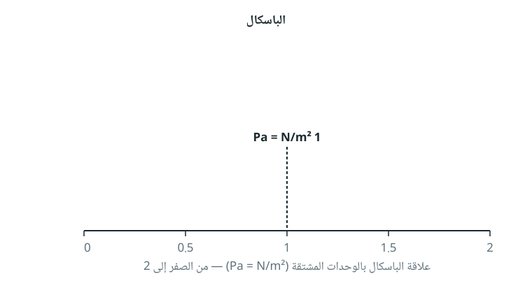

الباسكال
Pascal
الباسكال وحدة الضغط في النظام الدولي، ورمزه Pa، ويساوي نيوتن لكل متر مربع. الضغط قوة موزّعة على مساحة، والباسكال وحدة صغيرة جداً عملياً فتُستعمل مضاعفاته.
الباسكال هو وحدة الضغط والإجهاد في النظام الدولي للوحدات، ورمزه Pa. وهو وحدة مشتقة تُعرَّف بأنها ضغط ناتج عن قوة نيوتن واحد موزّعة عمودياً على مساحة متر مربع واحد، أي 1 Pa = 1 N/m². ويُعبَّر عنها بالوحدات الأساسية كيلوغرام/(متر·ثانية²). والضغط كمية قياسية في thermodynamics، لكن الإجهاد كمية موترية لأن اتجاه السطح يؤثر في القوة. والباسكال وحدة صغيرة جداً على المقياس العملي: الضغط الجوي القياسي 101 325 باسكال، أي نحو 101 كيلوباسكال، ويُستعمل الهكتوباسكال في الأرصاد الجوية لأن 1 hPa = 1 mbar. مثال: كتلة 1 كغ تستقر على مساحة 1 سم² تولّد ضغطاً نحو 98.07 كيلوباسكال، أي ما يقارب الضغط الجوي.
كيف تعمل الظاهرة؟
الضغط ينشأ من تصادم جزيئات المائع بجدران الحاوية: كل تصادم ينقل زخماً، ومجموع نقل الزخم لكل وحدة مساحة ولكل وحدة زمن هو الضغط. وفي السوائل الساكنة ينتقل الضغط في كل الاتجاهات بالتساوي عند النقطة نفسها، ويزيد مع العمق بمقدار ρ·g·h. وفي الغازات يزيد الضغط بزيادة عدد الجزيئات أو درجة الحرارة أو نقصان الحجم. وفي المواد الصلبة ينتقل الإجهاد عبر الشبكة البلورية، ويوصف بموتر لأن اتجاه المستوى يؤثر في القوة المؤثرة عليه. ولذلك فالباسكال وحدة مشتركة بين موائع وصلبة، لكن دلالتها تختلف.
العلاقة بالأرقام
1 Pa = 1 N/m² = kg/(m·s²). وp = F/A. والضغط الهيدروستاتيكي p = p₀ + ρ·g·h. والضغط الجوي القياسي 101 325 Pa = 101.325 kPa = 1 atm. و1 bar = 100 000 Pa. و1 hPa = 100 Pa = 1 mbar. مثال: كتلة 1 kg على 1 cm² = 1×10⁻⁴ m²: p = 9.806 65/1×10⁻⁴ = 98 066.5 Pa. وعمود ماء 10 m: p = 1000×9.806 65×10 = 98 066.5 Pa ≈ 0.980 7 bar.
مفاهيم متقاربة
الباسكال قوة لكل مساحة، والنيوتن قوة صرفة. والبار 10⁵ Pa بالضبط، والضغط الجوي القياسي 101 325 Pa، فالفرق بينهما نحو 1.3%. والضغط المطلق يشمل الضغط الجوي، والضغط النسبي لا يشمل، والفرق بينهما هو الضغط الجوي. والإجهاد في الصلب موتر لا قياسي، فوصفه برقم واحد صحيح في الضغط الهيدروستاتيكي فقط. والضغط ليس القوة: القوة تعتمد على المساحة التي يؤثر عليها الضغط.
حدود التطبيق
لا يُستعمل الضغط القياسي لوصف الإجهاد في المواد الصلبة بلا تحديد المستوى والاتجاه. وفي التدفقات السريعة لا يبقى الضغط موحّداً على المقطع، ويجب تحديد موضع القياس. وفي الموائع النادرة (الغازات المخلخلة) لا يبقى مفهوم الضغط الماكروسكوبي دقيقاً. ولا تُقارن ضغوط مقيسة بأجهزة مختلفة بلا معرفة إن كانت مطلقة أو نسبية. وفي الأنظمة النسبية لا يبقى الضغط كمية بسيطة عند تبديل الإطار.

| الكمية | القيمة | المصدر |
|---|---|---|
| علاقة الباسكال بالوحدات المشتقة | 1 Pa = N/m² | [1] |
| الباسكال بالوحدات الأساسية | 1 kg/(m·s²) | [2] |
| ضغط البخار المشبع للماء عند 100 °م | 0.101 42 MPa | [3] |
المصادر
- 1 The International System of Units (SI), 9th edition (2019) — BIPM — Bureau International des Poids et Mesures (2019). www.bipm.org/en/publications/si-brochure · اطُّلع عليه 2026-11-21
- 2 The International System of Units (SI), 9th edition (2019) — BIPM — Bureau International des Poids et Mesures (2019). www.bipm.org/en/publications/si-brochure · اطُّلع عليه 2026-11-21
- 3 NISTIR 5078: Thermodynamic Properties of Water — Tabulation from the IAPWS Formulation 1995 — NIST — National Institute of Standards and Technology (1998). nvlpubs.nist.gov/nistpubs/Legacy/IR/nistir5078.pdf · اطُّلع عليه 2026-11-21
استشهد بهذا المصطلح
الصيغتان مبنيتان من بيانات الصفحة نفسها: العنوان والتاريخ ورابط النسخة المنشورة.
الباسكال — Pascal. (2026). ديوان المعرفة — انفراد. https://infiradev.com/diwan/terms/term-pascal.html
@misc{term-pascal2026,
title = {الباسكال},
titleaddon = {Pascal},
howpublished = {{ديوان المعرفة — انفراد} — مرجع علمي عربي},
year = {2026},
url = {https://infiradev.com/diwan/terms/term-pascal.html},
urldate = {2026-11-26},
note = {مراجعة علمية: hermes (مراجعة معتمدة 2026-11-26)}
}
راجعه: hermes (مراجعة معتمدة 2026-11-26) · 2026-11-26 · آخر تحديث 2026-11-21